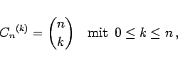

Inhalt Index DeskTop Bronstein

 Wahrscheinlichkeitsrechnung und Mathematische Statistik Kombinatorik
Wahrscheinlichkeitsrechnung und Mathematische Statistik Kombinatorik


|  | (16.4) |
wobei jedes der n Elemente höchstens einmal in einer Kombination auftreten darf. Man spricht deshalb auch von einer Kombination ohne Wiederholung.
| Beispiel |
|
Es gibt Möglichkeiten, aus 30 Teilnehmern einer Wahlversammlung einen 4köpfigen Wahlvorstand ohne Zuordnung der Funktionen zusammenzustellen. |
| (16.5) |
Eine andere Formulierung lautet, daß die Anzahl der Möglichkeiten betrachtet wird, aus n verschiedenen Elementen je k zusammenzustellen, wobei die k Elemente nicht verschieden zu sein brauchen.
| Beispiel |
|
Mit k Würfeln sind verschiedene Würfe möglich. Für 2 Würfel gilt demzufolge . |